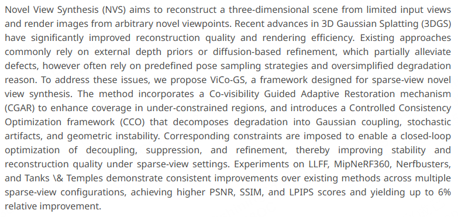
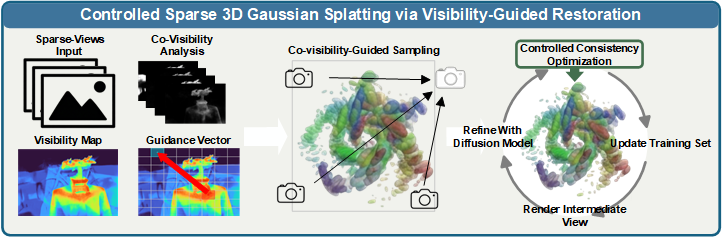
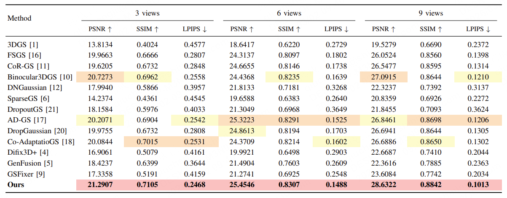
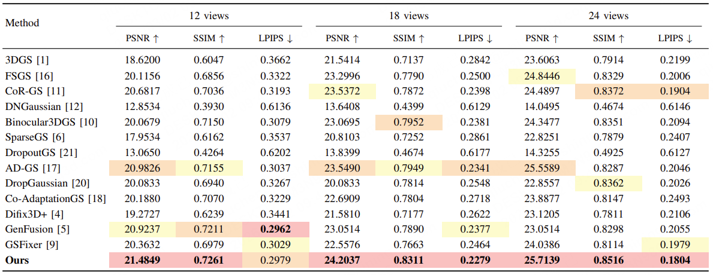
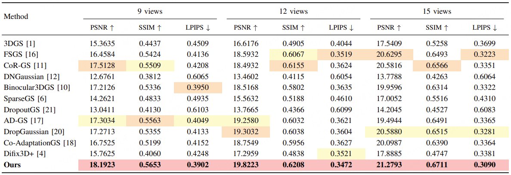
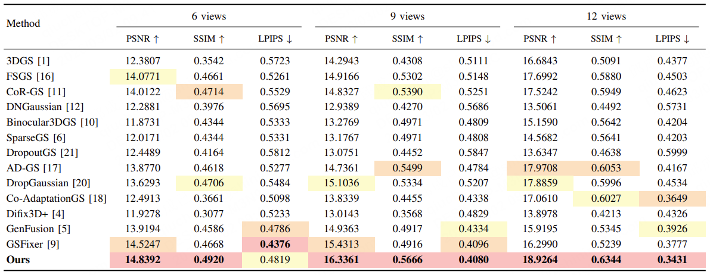
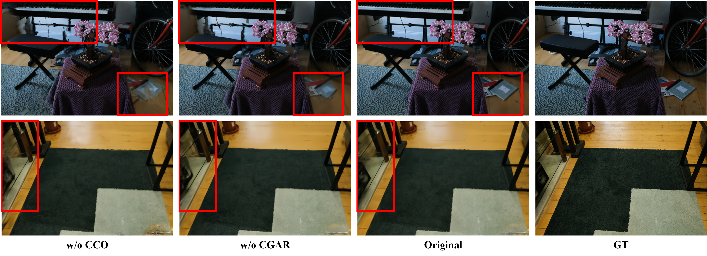
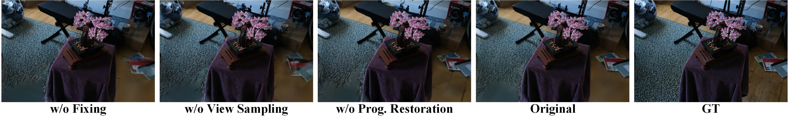
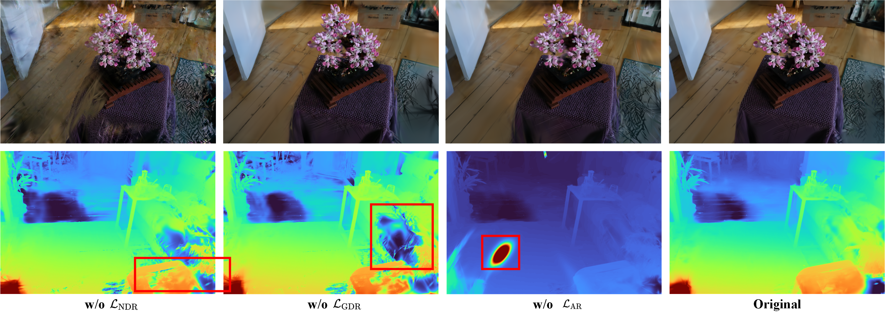

Qualitative Comparison
Qualitative comparisons between DropGaussian, CorGS, CoAdaptationGS, Difix3D+, and our approach on the LLFF, MipNeRF360, Tanks & Temples dataset are illustrated.



Tables 1-4. Quantitative comparison tables across the LLFF, MipNeRF360, Nerfbusters, and Tanks & Temples datasets demonstrate that the proposed method consistently outperforms existing approaches under various sparse-view settings.




Qualitative comparisons between DropGaussian, CorGS, CoAdaptationGS, Difix3D+, and our approach on the LLFF, MipNeRF360, Tanks & Temples dataset are illustrated.


